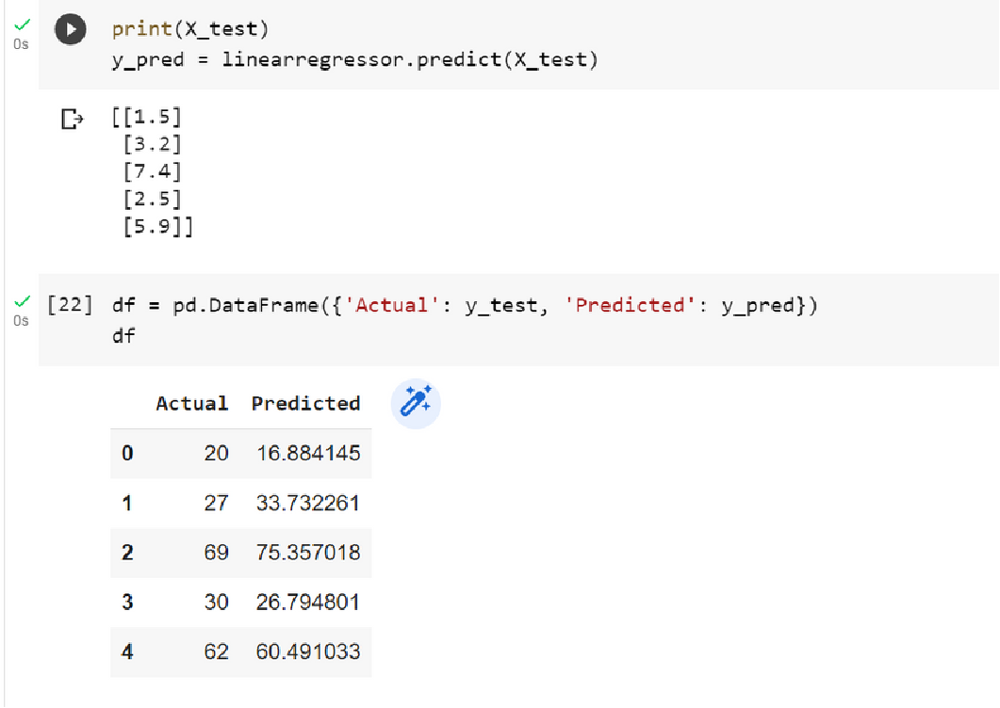

STUDENT DATASET:
In this regression task we will predict the percentage of marks that a student is expected to score based upon the number of hours they studied. This is a simple linear regression task as it involves just two variables.
IMPORTING THE LIBRARIES

LOADING THE DATASET
INFORMATION OF DATASET
PLOTTING THE DATA

PREPARING THE DATA
PLOTTING THE LINEAR REGRESSION
CHECKING WHETHER MODEL IS GENERALISED MODEL OR NOT
MAKING PREDICTIONS
COMPARING ACTUAL VS PREDICTED
EVALUATING THE MODEL
DEPLOYING THE MODEL

Scenarios where simple linear regression can be applied and where our implementation could be useful:
- Education - can be used by educators to analyze the relationship between variables like hours studied and exam scores. Information can be used to optimize study techniques and improve student performance.
- Business - can be used to predict sales or revenue based on factors like marketing spend or customer traffic. This can help businesses optimize their operations and make informed decisions about resource allocation.